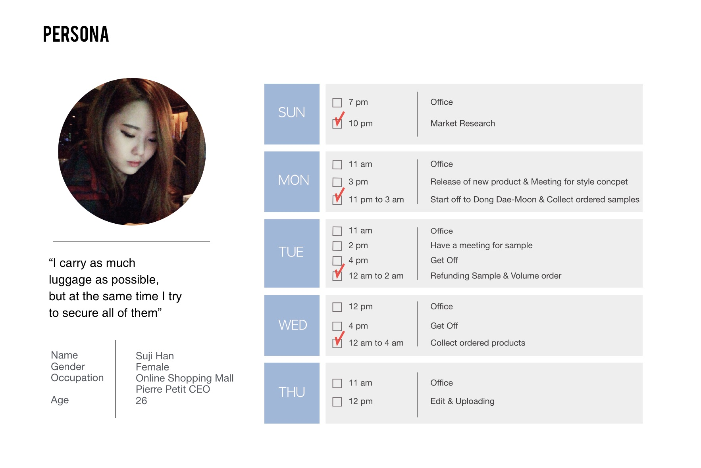

Weekly DongDaeMun
Dong Dae Mun night time market environment UX solution
UX, System, GUI | 2014
Dong Dae Mun (DDM), the largest fashion market in Seoul, is the only place on earth where over 60 thousand retail and sales markets are clustered with in 5km. Every night, more than 150,000 people from all over the country crowd in this area to transact wholesale. It is the most frenzy time of the day, with thousands of people and plastic bags trying to find its way. Weekly DDM provides better experience for users at wholesale market by aiding in organising purchased list, keeping track of priorities, finding the way back to the store, and identifying their bag.
Idea
During 30 years of fast changing culture, DDM has fixed into its own culture and ecosystem.However, albeit its culture we believed there exists various needs and problem. We plan to investigate this need and respect it as much as possible while trying to improve it
TUnlike other shopping mall users, who actively employ deliver service, The OT’s customers are comparatively young and sensitive to expenses, thus transport and keep the packages by themselves. This mall seems to go through more systematic disorder than other malls. The unorganized methods of recording orders and packages often lead to confusion. Also, users are unable to know the arrival time of packages, and have to wait aimlessly until it arrives. This overall inefficiency of time and users movement are the main problems that we aim to solve. The stake holders are merchants, shopping mall administrator, and customer. We plan to improve the targeted environment by focusing on the users who transport the packages by themselves.
When phone is pushed in, eject button pops out and automatically plays, just like old tape player. The color and shape of speaker is customizable according to the driver’s taste.
Moodboard
Form study for a simple and classic material and pattern